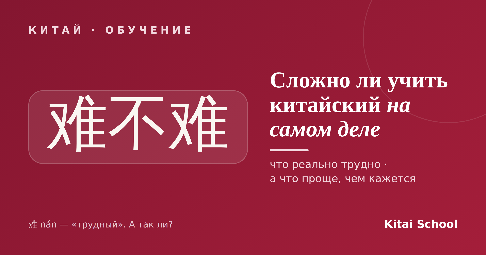
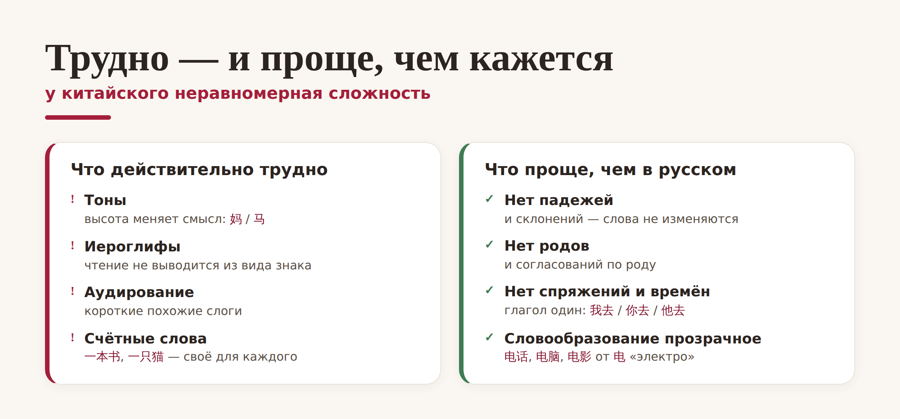
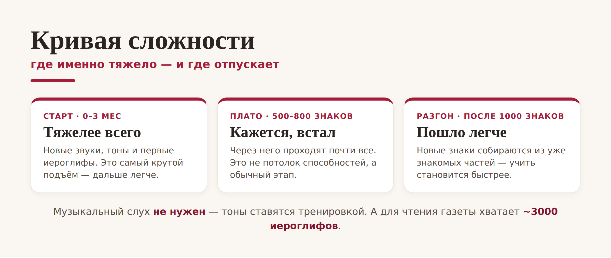

Китай · обучение

«Китайский — самый сложный язык в мире» — так говорят чаще всего. Но правда ли это? На самом деле у китайского неравномерная сложность: он труден там, где европейские языки лёгкие, и наоборот. Давайте честно разберём, сложно ли учить китайский и такой ли сложный китайский язык, каким его считают: что в нём действительно тяжело, а что окажется проще, чем вы думали.
Репутация не на пустом месте. Международная шкала FSI относит китайский к самой сложной, четвёртой категории языков для англоговорящих — около 2200 учебных часов. Но дело не в том, что язык «заумный». Просто в нём почти не за что зацепиться: ни знакомых корней, ни привычного алфавита, поэтому каждое слово берётся с нуля. Вот и весь секрет, сложный ли китайский язык: он не хитрый, он непривычный.
Будем честны — несколько вещей потребуют усилий, и их лучше знать заранее:

Главные «подъёмы» — это тоны (высота голоса меняет смысл: 妈 mā «мама» и 马 mǎ «лошадь»), иероглифы (чтение не выводится из вида знака, это отдельный навык) и понимание на слух — слоги короткие и похожие. Плюс счётные слова, которые ставят между числом и предметом.
А теперь приятная половина, о которой почему-то молчат. Грамматика китайского проще русской: в нём нет падежей, родов, спряжений, времён и артиклей. Слово вообще не меняет форму — глагол «идти» выглядит одинаково в «я иду», «ты идёшь», «он пошёл» (我去 / 你去 / 他去). А новые слова часто складываются из знакомых: от 电 «электро» — 电话 «телефон», 电脑 «компьютер», 电影 «кино».
Теперь про сроки. Сколько учить китайский — зависит от цели, и те самые 2200 часов пугают, но это путь до высокого уровня, а первые результаты приходят гораздо раньше. Реально ли выучить китайский обычному человеку? Да — вопрос не таланта, а регулярности.

Тяжелее всего — первые 2–3 месяца, пока ставятся звуки и тоны. Потом почти всех ждёт «плато» на 500–800 знаках, когда кажется, что застрял, — это нормальный этап, а не потолок способностей. А после тысячи знаков учить становится легче: новые иероглифы собираются из уже знакомых частей. Первая понятная цель — HSK 1, начальный уровень A1 (150 слов по старому стандарту, 300 по новому HSK 3.0); он по силам почти каждому за пару-тройку месяцев.
Развеем миф. Музыкальный слух для тонов не нужен — они ставятся тренировкой. А для чтения обычных текстов хватает 2000–3000 иероглифов, а не «десятков тысяч». Единственное, что почти нельзя сделать в одиночку, — расслышать свою ошибку в тоне: тут на старте очень выручает преподаватель.
Так сложно ли учить китайский? Он непростой, но посильный: платите вниманием за тоны и иероглифы, зато получаете простую грамматику. Реально ли выучить китайский без переезда и таланта? Абсолютно — если заниматься понемногу, но регулярно. Страшнее всего он только на старте.
Не так страшен китайский! 世上无难事，只怕有心人。